Подключение к машине и просмотр кода
В этом разделе рассматриваются несколько способов подключения машины к компьютеру и просмотра кода.
Рекомендуемый порядок действий в этом разделе: подключиться к точке доступа машины / вставить сетевой кабель, чтобы получить IP-адрес → посмотреть IP-адрес на экране OLED → войти по VNC → отключить собственную точку доступа и подключиться к своей Wi-Fi сети (чтобы облегчить дальнейшую работу с функциями больших языковых моделей) → проверить обновлённый IP-адрес на OLED → повторно подключиться по VNC → посмотреть исходный код.
Имя точки доступа по умолчанию в заводском образе: ROSMASTER, пароль: 12345678, IP-адрес по умолчанию: 192.168.8.88.
1. Подключение к машине
Независимо от способа подключения к машине, компьютер и машина должны находиться в одной локальной сети. Проще всего обеспечить это, подключившись к одной и той же Wi-Fi сети или точке доступа. Сначала подключитесь к точке доступа машины по умолчанию — ROSMASTER, пароль Wi-Fi — 12345678. После успешного подключения войти можно следующими способами.
Также можно подключить материнскую плату напрямую по сетевому кабелю. После подключения кабеля экран OLED автоматически обновит IP-адрес. Далее в тексте все операции демонстрируются с использованием IP-адреса, полученного при подключении по сетевому кабелю.
1.1 Подключение по SSH (опционально, только для тех, кому это нужно)
Для подключения к машине можно использовать putty, MobaXterm или другие инструменты для SSH-подключения. Здесь в качестве примера рассмотрим putty. Адрес для загрузки putty: Download PuTTY: latest release (0.83)
Выберите установку в соответствии с версией вашей операционной системы. После успешной установки дважды щёлкните для запуска. Интерфейс putty показан на рисунке ниже.
Выберите здесь SSH, затем введите IP-адрес, отображаемый на экране OLED, в поле Host Name (or IP address). Мой IP-адрес в данном случае — 192.168.2.92, поэтому вводим IP-адрес, как показано на рисунке ниже.
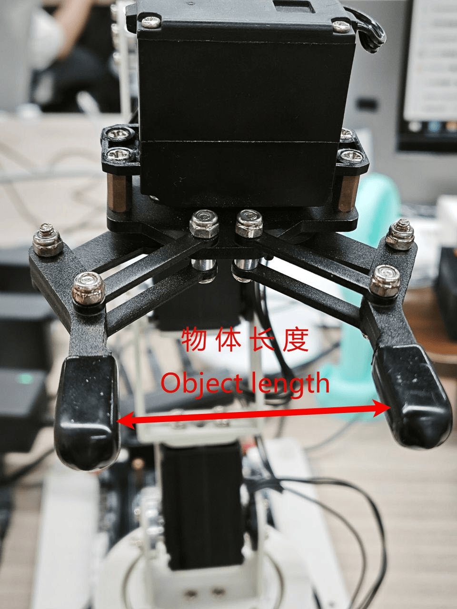
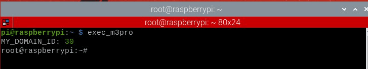
Затем нажмите Open — откроется терминал и всплывающее окно; нажмите Accept, чтобы подтвердить получение, как показано ниже.
Затем в терминале появится строка login as — здесь введите имя пользователя материнской платы и нажмите Enter, после чего будет предложено ввести пароль. Имя пользователя и пароль для каждой материнской платы приведены в таблице ниже:
| Материнская плата | Имя пользователя | Пароль |
|---|---|---|
| Raspberry Pi 5 | pi | yahboom |
| Jetson-Nano | Jetson | yahboom |
| Orin-Nano | Jetson | yahboom |
| Orin-NX | Jetson | yahboom |
Предположим, что в данном случае используется материнская плата Orin-Nano — тогда вводим jetson и нажимаем Enter, после чего вводим пароль. При вводе пароля символы не отображаются. Введите yahboom и нажмите Enter.
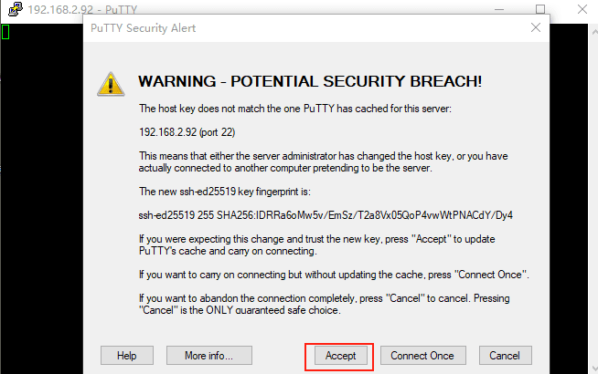
Интерфейс успешного подключения к машине показан ниже:
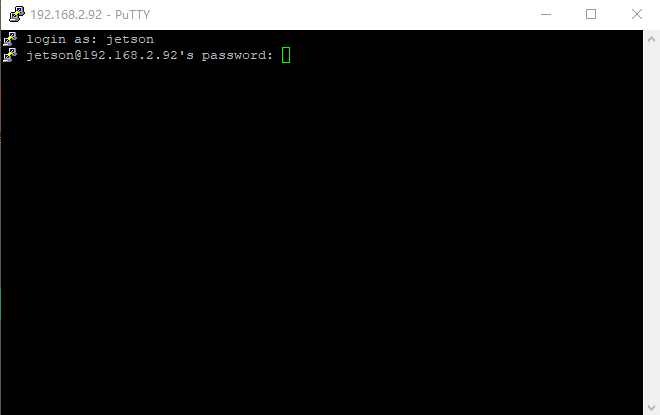
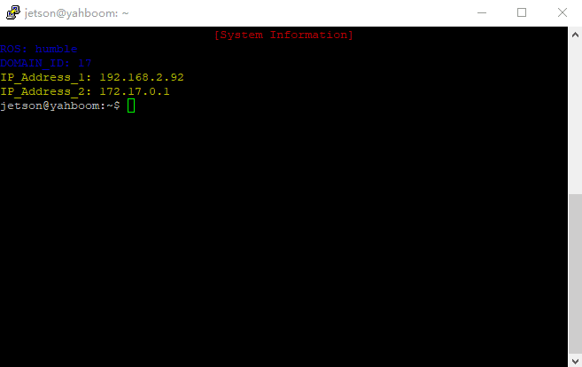
Таким способом открывается только один терминал, графический интерфейс не отображается. Поэтому SSH подходит для входа без запуска графических программ.
1.2 Вход через VNC
1.2.1 Материнская плата Orin без экрана (этот раздел нужно настроить только пользователям платы Orin без подключённого монитора; остальным пользователям этот раздел не нужен — можно переходить сразу к 1.2.2)
Поскольку на материнской плате Orin используется система Ubuntu 22.04, для входа в графический режим требуется подключённый монитор. Пользователи, не приобретавшие комплект с монитором, могут не иметь возможности включить графический интерфейс. Ниже описан способ вывода графического интерфейса на виртуальный рабочий стол — он предназначен только для пользователей, у которых к плате Orin не подключён монитор. Пользователи, у которых монитор подключён, а также пользователи Jetson Nano и Raspberry Pi могут пропустить этот шаг.
Откройте документ «19. Приложение — файлы виртуального рабочего стола» и скопируйте файлы xorg.conf.backup_dp и xorg.conf.backup_vnc в каталог /etc/X11.
Установите окружение виртуального рабочего стола xserver-xorg-video-dummy:
sudo apt-get install xserver-xorg-video-dummy
Откройте терминал и введите следующую команду, чтобы включить виртуальный рабочий стол и переключиться в режим VNC.
sudo cp /etc/X11/xorg.conf.backup_vnc /etc/X11/xorg.conf
Перезагрузите систему — после этого можно входить на рабочий стол без подключённого экрана (переходите к пункту 1.2.2, чтобы подключиться по VNC).
sudo reboot
Примечание: после переключения в режим VNC подключение по DP становится недействительным (даже если монитор подключён к материнской плате, изображение не будет отображаться). Чтобы снова использовать интерфейс DP для подключения дисплея, нужно вернуть настройки обратно.
Чтобы отключить виртуальный рабочий стол:
Если нужно подключить дисплей через DP, откройте терминал и введите следующую команду, чтобы переключиться в режим подключения дисплея через интерфейс DP.
sudo cp /etc/X11/xorg.conf.backup_dp /etc/X11/xorg.conf
Перезагрузите систему — после этого можно подключить дисплей по кабелю DP.
sudo reboot
1.2.2
VNC позволяет пользователям удалённо получать доступ к рабочему столу другого компьютера и управлять им по сети. Поэтому, когда нужно получить доступ к рабочему столу машины — например, чтобы запустить отображение изображения с камеры — можно подключиться к машине с помощью VNC. Адрес для загрузки VNC: Download VNC Viewer by RealVNC®
Скачайте и установите версию, подходящую для вашего компьютера. После успешной установки дважды щёлкните, чтобы открыть программу. Отображаемый экран показан ниже:
Введите IP-адрес машины. В данном случае мой IP-адрес — 192.168.2.92, как показано ниже.
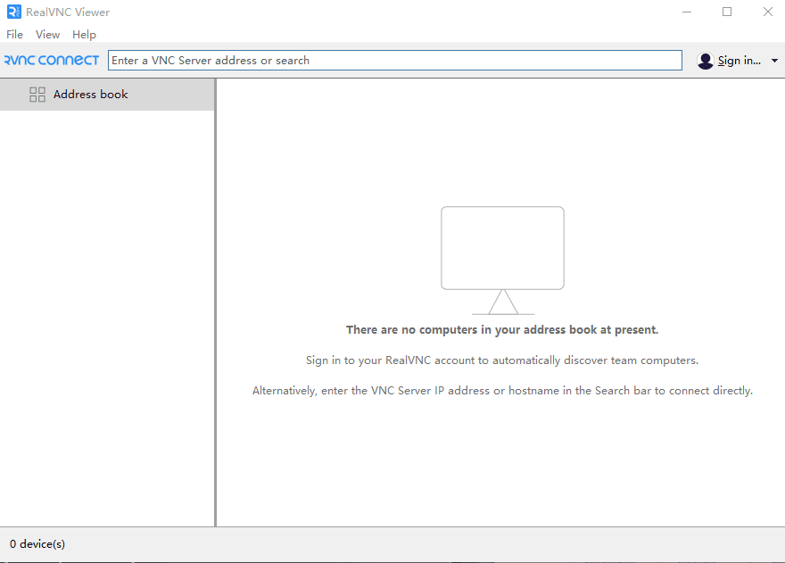
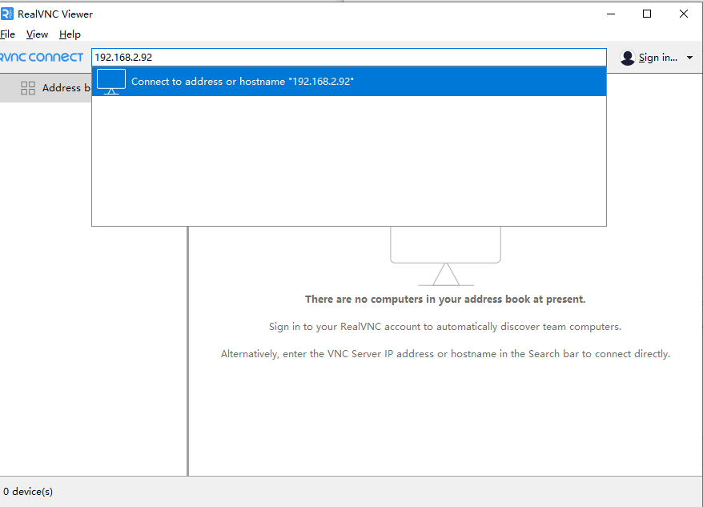
Затем нажмите Enter,
Введите имя пользователя в поле Username и пароль в поле Password. Обратитесь к таблице в разделе 1.1 — пароль для всех материнских плат одинаковый: yahboom. Затем нажмите OK, чтобы войти на рабочий стол, как показано ниже.
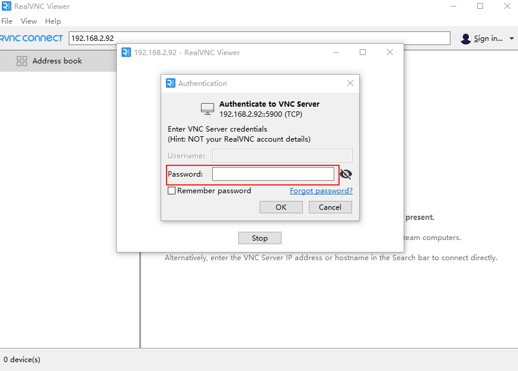
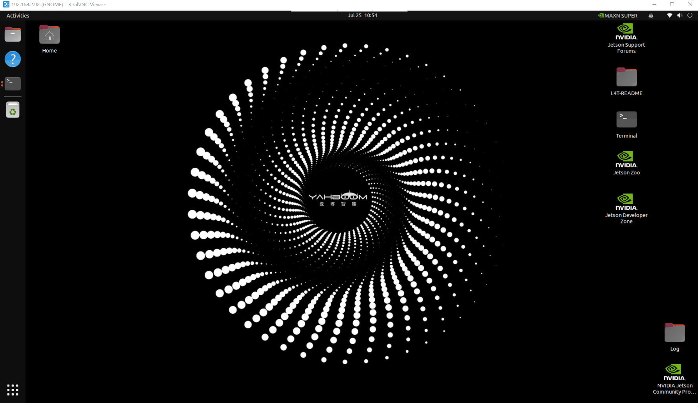
Если отображается некорректная картинка, как в следующей ситуации,
если изображение продолжает мигать и сбрасываться, нужно выполнить настройку, показанную на рисунке ниже.
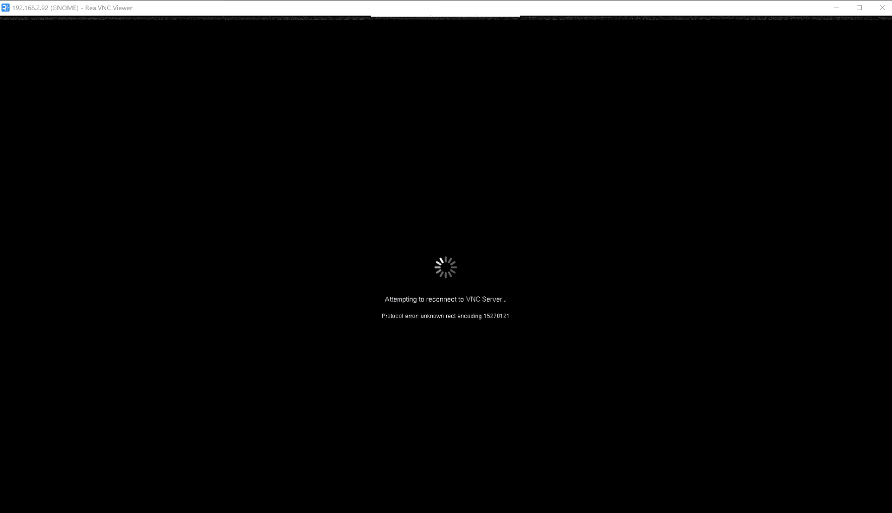
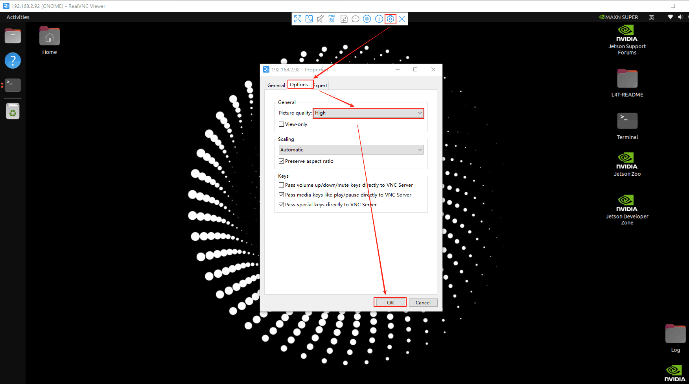
Затем подключитесь снова. К материнской плате Orin можно подключить только один удалённый рабочий стол одновременно. Если подключение не удаётся, проверьте, не подключён ли уже удалённый рабочий стол.
После подключения, поскольку для работы с большими ИИ-моделями требуется доступ в интернет, а точка доступа машины — это только локальная сеть без выхода в интернет, нужно переключить сеть, чтобы облегчить последующее использование функций больших языковых моделей.
2. Просмотр кода
Код для материнской платы Orin находится в каталоге /home/jetson, поэтому его можно посмотреть сразу после подключения к машине; код для материнских плат Raspberry Pi 5 и Jetson-Nano находится в запущенном Docker-контейнере, поэтому сначала нужно войти в контейнер, чтобы увидеть код.
Далее описаны несколько способов просмотра кода, которые облегчат его последующее редактирование и изменение.
2.1 jupyter-lab
2.1.1 Материнская плата Orin (использовать jupyter-lab для просмотра и изменения кода не рекомендуется)
jupyter-lab запускается автоматически при загрузке системы, поэтому достаточно ввести в браузере IP-адрес и :8888, чтобы открыть jupyter и посмотреть код. В данном случае мой IP-адрес — 192.168.2.92, поэтому в браузере вводим следующее,
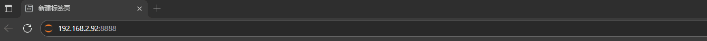
Затем нажмите Enter — появится запрос пароля. Введите yahboom, после чего откроется интерфейс jupyter-lab, как показано ниже.
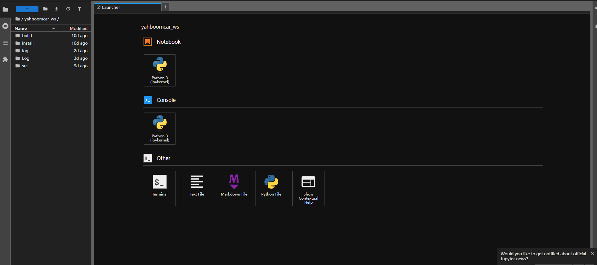
Выберите содержимое папки слева, чтобы просмотреть код.
2.1.2 Материнские платы Raspberry Pi 5 и Jetson-Nano
Нужно войти в Docker-контейнер и выполнить команду jupyter-lab --allow-root, а затем ввести в браузере IP-адрес машины и :8888, чтобы запустить jupyter-lab и посмотреть код машины. Как показано на рисунке ниже, я вхожу в контейнер машины, перехожу в каталог /root и выполняю в терминале команду:
jupyter-lab --allow-root
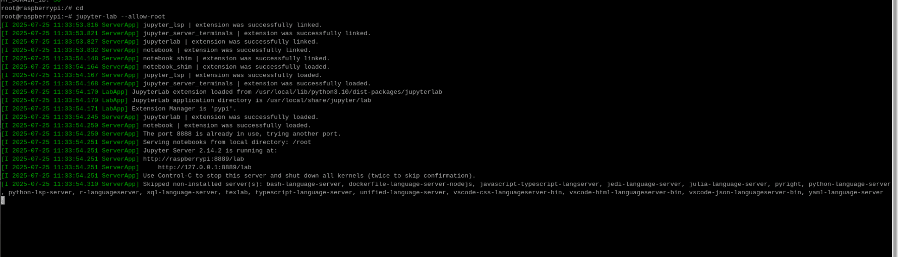
Затем в браузере вводим IP-адрес машины и :8888. IP-адрес моей материнской платы Raspberry Pi — 192.168.2.22, поэтому вводим 192.168.2.22:8888, как показано ниже.
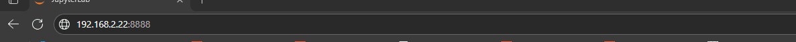
Нажмите Enter. Если потребуется ввести пароль, введите yahboom, чтобы войти в jupyter-lab и посмотреть код.